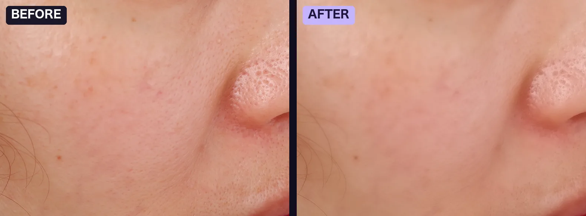

Totonoe Skin Retouch User Guide
Totonoe Skin Retouch is a skin retouch plugin for Adobe Premiere Pro and After Effects. It detects skin automatically and evens out roughness, redness and shine while keeping edges, hair and natural skin texture.
This guide covers version 1.8.0 on Mac and Windows. For an overview, price and FAQ, see the product page.
System requirements
| Mac | macOS 13 or later. Apple Silicon and Intel (Universal Binary). Processed on a Metal-compatible GPU. |
|---|---|
| Windows | Windows 10 / 11 (64-bit). CPU only: the Windows version does not use the GPU, so it is slower than the Mac version. |
| Host apps | Adobe Premiere Pro 2025 or later, Adobe After Effects 2025 or later. Developed and tested on the 2026 releases of both. |
| Other hosts | DaVinci Resolve: a separate product (Mac only, Windows is not supported). This guide covers the Premiere Pro and After Effects version. Other hosts, including Final Cut Pro and Avid, are not supported. |
Install
One install works in both Premiere Pro and After Effects, because the plugin goes into Adobe's shared MediaCore folder.
Mac
- Double-click
SkinRetouch-Installer.pkgand follow the installer. It is signed and notarized by Apple, so Gatekeeper does not block it. - In the full version, the license is set automatically. You do not need to enter a key or move any files.
- Quit After Effects or Premiere Pro completely, then start it again.
- Open the Effects panel. The effect Skin Retouch is in the Skin Retouch category.
The installed file is here:
/Library/Application Support/Adobe/Common/Plug-ins/7.0/MediaCore/SkinRetouch.plugin
Windows
- Close Premiere Pro, After Effects and Media Encoder before you install.
- Unzip the downloaded file and run the installer (.exe).
- The installer is not code-signed, so Windows SmartScreen may show “Windows protected your PC”. Click More info, then click Run. This screen appears because the installer has no Windows code signature. It does not mean the file has a problem.
- Follow the installer. In the full version, the license is set automatically.
- Start Premiere Pro or After Effects. The effect Skin Retouch is in the Skin Retouch category of the Effects panel.
The Windows version is installed into Adobe's shared MediaCore folder, C:\Program Files\Adobe\Common\Plug-ins\7.0\MediaCore\.
A free Windows beta is available until November 15, 2026. The official Windows version is added to the same full version product on BOOTH from November 16, 2026, so one purchase covers both Mac and Windows. If you already bought the Mac version, you can download the Windows version from your BOOTH library at no extra cost.
Get the installers from BOOTH: full version or free trial.
Quick start
The steps are the same in Premiere Pro and After Effects.
-
Apply the effect
Apply Skin Retouch to a clip or layer. Skin is detected automatically the moment you apply it.
-
Choose a preset
Pick Natural, Standard or Strong. If you are not sure, keep Standard.
-
Adjust Amount
Use Amount to set the overall strength up or down.
Most shots need nothing more. Turn on Compare (Show Original) at any time to check your result against the untouched source.

Presets
A preset sets six sliders at once: Smoothing, Texture, De-Shine, Blemish, Redness and Paleness.
| Preset | Smoothing | Texture | De-Shine | Blemish | Redness | Paleness | Use for |
|---|---|---|---|---|---|---|---|
| Natural | 25 | 60 | 0 | 0 | 0 | 0 | A light touch that keeps the most texture |
| Standard (default) | 50 | 40 | 0 | 0 | 0 | 0 | Everyday interview and corporate work |
| Strong | 80 | 30 | 25 | 25 | 8 | 0 | Difficult footage: harsh light, visible blemishes, shine |
Custom is selected automatically as soon as you change any of those six sliders by hand. Choose a named preset again to return to its values.
Standard matches the default values of earlier versions, so opening an older project does not change how it renders.

Parameter reference
Parameters are listed in the order they appear in the Effect Controls panel.
Main controls
| Parameter | Range | Default | What it does |
|---|---|---|---|
| Preset | Natural / Standard / Strong / Custom | Standard | Sets the six retouch sliders at once. See Presets. |
| Auto Detect | On / Off | On | Estimates the skin hue from the image on every frame, so you do not pick a color by hand. While it is on, Skin Color is ignored. |
| Temporal Stability | 0–100 | 50 | Steadies Auto Detect across neighboring frames (the current frame and the two before it), so compression noise or a passing highlight does not make the mask flicker. It works only while Auto Detect is on. 0 turns it off. |
| Amount | 0–100 | 100 | One dial that scales Smoothing, De-Shine, Blemish, Redness and Paleness together. Lower it to soften the whole look without rebalancing each slider. Texture is not scaled by Amount. At 0 the output matches the original, because texture is only restored where smoothing is applied. |
| Compare (Show Original) | On / Off | Off | Shows the untouched source so you can compare. Turn it off before you render. |
Skin Selection
| Parameter | Range | Default | What it does |
|---|---|---|---|
| Skin Color | Color / eyedropper | A light skin tone (R 210, G 160, B 140) | The skin tone used for detection when Auto Detect is off. Use the eyedropper on a mid-tone area of the cheek, avoiding shadows and highlights. |
| Hue Range | 0–90 degrees | 25 | How wide a range of hues counts as skin. Too narrow misses skin; too wide picks up clothing or background. 20–30 suits most footage. |
| Hue Softness | 0–100 | 50 | Feathers the edge of the skin mask. 40–60 gives smooth transitions. |
| Show Mask | On / Off | Off | Shows the detected skin area in white. Use it while you adjust detection, and turn it off before you render. |
Smoothing
| Parameter | Range | Default | What it does |
|---|---|---|---|
| Smoothing | 0–100 | 50 | Strength of the edge-preserving skin smoothing. Edges, hair, eyebrows and eyelashes are protected. 40–60 is the typical working range. |
| Texture | 0–100 | 40 | Restores fine detail (pores, natural grain) after smoothing, which prevents a plastic, painted look. Raise it when you raise Smoothing. 30–50 is typical. |
| De-Shine | 0–100 | 0 | Reduces bright shine on the skin. Use it only on shots that need it, typically up to 40. |
| Blemish | 0–100 | 0 | Makes small dark spots such as acne and small blemishes less noticeable. Eyebrows and eyelashes are protected automatically. Keep it moderate (up to about 50), because very high values can flatten natural shadows. |
Color
| Parameter | Range | Default | What it does |
|---|---|---|---|
| Redness | −100 to +100 | 0 | Adds (+) or removes (−) redness and flush in the skin. ±10–20 looks natural. |
| Paleness | −100 to +100 | 0 | Moves the skin lighter (+) or toward a tan (−). ±10–20 looks natural. |
Output and help
| Parameter | Range | Default | What it does |
|---|---|---|---|
| Output Mix | 0–100 | 100 | Final blend between the retouched result and the original. 100 is the full result; lower values mix the original back in. |
| User Guide (button) | Button | — | At the bottom of the effect. In the full version it is labeled User Guide and opens the usage guide in your web browser. In the trial it is labeled Buy on BOOTH and opens the full version page. The button does not affect rendering. |
Recommended workflow
- Leave Auto Detect on. It handles most footage without any setup.
- Check the mask. Turn on Show Mask and confirm the white area covers the skin without spilling onto clothing or background.
- Refine detection if needed. Adjust Hue Range and Hue Softness if the mask misses skin or picks up other areas.
- Pick a preset. Turn Show Mask off, then choose Natural, Standard or Strong.
- Set the strength with Amount. Set the overall level before you touch individual sliders.
- Fine-tune only what the shot needs. Add De-Shine for shine, Blemish for spots, and Redness or Paleness for tone.
- Final check. With Show Mask and Compare off, review the shot at 100% zoom and at full-frame size.
Tips for common shots
Several people in the frame
The effect is applied to everyone with a similar skin tone. To retouch only one person, turn Auto Detect off and use the Skin Color eyedropper on that person, or combine Skin Retouch with a mask in Premiere Pro or After Effects.
Moving shots and changing light
- With Auto Detect on, the skin hue is estimated on every frame. Keep Temporal Stability at its default of 50 (or raise it) if the mask flickers.
- If the detected area jumps noticeably from shot to shot, switch Auto Detect off and pick the skin with Skin Color.
- With Auto Detect off, pick Skin Color again for each shot whose lighting differs significantly.
Log footage
Log footage (S-Log, V-Log and similar ungraded formats) places skin outside the expected color range, so detection becomes unreliable. Apply your color conversion (a Rec.709 LUT) or Lumetri Color first, and place Skin Retouch after it in the effect stack.
Background or clothing detected as skin
- Turn on Show Mask and narrow Hue Range while you watch the white area.
- Turn Auto Detect off and pick the skin with Skin Color. Beige walls, wood and warm interiors are typical backgrounds that get picked up.
- If some of the background still gets softened, lower Amount until it is not noticeable.
Strong color casts from colored lighting
Widen Hue Range slightly and raise Hue Softness.
Trial and full version
| Free trial | Full version | |
|---|---|---|
| Features | Every feature of the full version | Every feature |
| Video output | Faint diagonal stripes (a watermark) are added to the video | No watermark |
| License | None needed | Set automatically by the installer |
| Button at the bottom of the effect | Buy on BOOTH | User Guide |
| Where | BOOTH (free trial) | BOOTH (full version), one-time purchase of ¥9,800 (about US$65) |
The full version is a download product, so purchases cannot be refunded except when the product is defective. Please test the free trial on your own footage before you buy.
During the free Windows beta (until November 15, 2026), the beta runs without a watermark. After that date, a copy without a license runs as the trial.
Troubleshooting
The effect does not appear in the Effects panel
- Check that the plugin is in the shared MediaCore folder:
/Library/Application Support/Adobe/Common/Plug-ins/7.0/MediaCore/SkinRetouch.pluginon Mac, orC:\Program Files\Adobe\Common\Plug-ins\7.0\MediaCore\on Windows. - Quit Premiere Pro or After Effects completely and start it again. Reopening a project is not enough.
- In Premiere Pro, type “Skin Retouch” into the Effects panel search box. The category may be collapsed.
The mask picks up the wrong areas, or misses skin
- Is the footage log? This is the most common cause. See Log footage.
- Turn Auto Detect off and use the Skin Color eyedropper. If that fixes it, the footage does not suit automatic detection.
- For a strong color cast, widen Hue Range slightly and raise Hue Softness.
- If a skin-toned background is softened, narrow Hue Range and pick Skin Color again while you watch Show Mask. If some remains, lower Amount until it is not noticeable.
Playback is slow
- In Premiere Pro, lower the Program Monitor’s Playback Resolution to 1/2 (or 1/4). If playback stutters at Full on 4K footage, 1/2 is usually a good first step. In After Effects, lower the preview resolution the same way.
- On Mac, rendering uses the GPU through Metal. If the GPU path cannot be used, the plugin falls back to CPU processing, which is slower on high-resolution footage.
- The Windows version runs on the CPU only, so it is slower than the Mac version. Lowering the playback resolution helps most there.
- Judge performance from a final render or export. Real-time preview speed often does not match render time.
A watermark (diagonal stripes) appears on the image
The plugin renders with faint diagonal stripes when it finds no valid license. This is how the free trial works. If you bought the full version, reinstall with the installer from your purchase, then quit and restart the host app completely. If the stripes remain, contact support through BOOTH.
Windows shows “Windows protected your PC”
Click More info, then Run. The installer is not code-signed, which is why SmartScreen warns. If the installer reports that Premiere Pro, After Effects or Media Encoder is running, close it and run the installer again.
Known limitations
- Large moles (roughly 7 px across or larger) are not removed by Blemish. This is intentional: the same protection keeps eyebrows and eyelashes from being erased.
- Several people with similar skin tones are all affected together. See Several people in the frame.
- The DaVinci Resolve version is a separate product (Mac only, Windows is not supported), so this guide does not cover it. The product in this guide runs in After Effects and Premiere Pro only.
Support
Send a message through BOOTH. You can write in English or Japanese. Please include your OS and version, your Premiere Pro or After Effects version, and what happened.
Related articles: How to Retouch Skin in Premiere Pro: The Built-in Lumetri Method and a Plugin / Beauty Box Alternative for Premiere Pro and After Effects / How to Retouch Skin in After Effects / How to Reduce Skin Shine in Premiere Pro